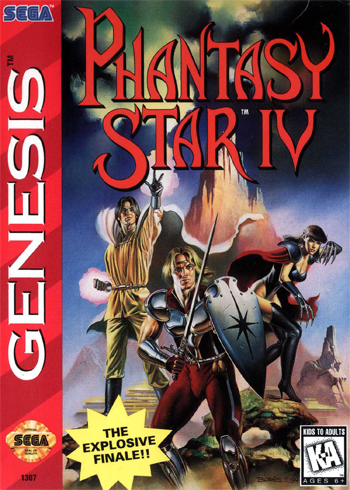

Phantasy Star IV
En Phantasy Star IV: The End of the Millennium, los jugadores se embarcan en una épica aventura de ciencia ficción y fantasía, donde Chaz Ashley, un joven cazador, y su mentora Alys Brangwin, deben enfrentar una amenaza ancestral que busca sumir al sistema Algol en la oscuridad. Con un sistema de combate por turnos, una historia profunda con diálogos tipo cómic y una gran variedad de habilidades y técnicas, este RPG clásico ofrece una de las experiencias más completas y emocionantes de la Sega Genesis. Considerado el cierre definitivo de la saga original, Phantasy Star IV combina exploración, estrategia y narrativa envolvente en un mundo vasto y misterioso.
- RPG (Juego de rol por turnos)
- Tech (Uso de habilidades tecnológicas y mágicas)
- SciFi (Ambientación de ciencia ficción)
- Team (Batallas con un grupo de héroes)
- Doom (Lucha contra una amenaza cósmica)
- Lore (Historia y mundo detallado)
Precio: $19.990
Comprar